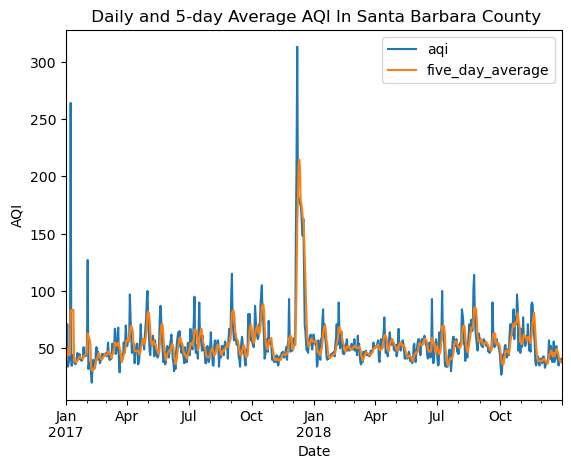
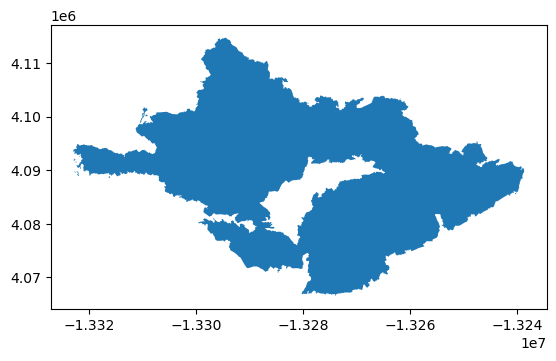
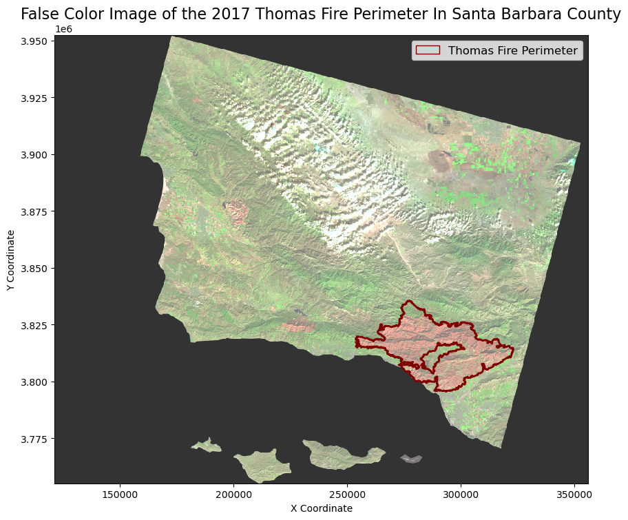

# Import Libraries
import pandas as pd
import numpy as np
import os
import matplotlib.pyplot as plt
import matplotlib.patches as mpatches
import xarray as xr
import rioxarray as rioxr
import geopandas as gpdThe Great Thomas Fire Analysis: A Tour Of Functions
Amanda G. Overbye
Have you ever dreamed of analyzing a wildfire all by yourself using Python and a handful of functions? Well if you have, today is your lucky day! The goal of this blog post is to give a quick guide on how to do just that so you can make your dream come true or live vicariously through me. First, let’s go over some background on the Thomas Fire that impacted Santa Barbara and the surrounding areas.
I am going to be doing this in two parts. In the first part, I will be making a graph to visualize how the fire impacted air quality or the AQI. For the second part, I am going to be using false color imagery to get a better picture, or just a picture at least, of the impact the fire had on vegetation in the area. As I mentioned earlier, this post is going to highlight the functions I am going to use,
And the functions are…
Concat()Rolling()To_file()Squeeze()Imshow()
Throughout this analysis, I will highlight the places where I used the functions, mention the library they are from, and explain, roughly, what they do. In addition to the functions, I will be highlighting the overall skills I will use in each section.
Some Background on the Thomas Fire
The Thomas Fire was an extremely large wildfire that burned 378,000 acres from December 4th, 2017 to January 12th, 2018. At the time, it was considered the largest wildlife in modern California history. The fire caused massive destruction both from the flames and the subsequent mudslides. It was truly devastating. Hopefully, in learning to do this analysis we can help in finding new ways to mitigate and respond to these disasters.
Some Background on the Data
I am going to be using three data sets. Each data set should be openly available to use. I will talk more about the data in the sections where I use it.
Part 1. Visualizing AQI
The data we are going to be using is about the Air Quality Index (AQI) from the US Environmental Protection Agency. The particular data sets we are using are from 2017 and 2018 and go by county. This dataset has measurements of criteria gases (things like ground-level ozone, carbon monoxide, sulfur dioxide, lead, etc.), and Particulate Matter (PM10 and PM2.5). Particulate matter is just a bunch of super tiny bits of debris that float in the air and can get into our lungs. It is measured by its diameter in microns, which are one-millionth of a meter. PM10 is larger and can sometimes be visible, whereas PM2.5 is super, super tiny and can get into our bloodstream through our lung tissue. Unsurprisingly, it is bad for us. Particulate matter is often generated by fires through all the burning, and that is why I would like to measure it here.
My goal for this section is to create a simple graph that will show the measurement of AQI over time. There are going to be a couple of steps in this process.
- Cleaning the data
- Changing the index
- Averaging data
- Visualizing data
So let’s begin!
# Read in data for the AQI analysis
aqi_17 = pd.read_csv('https://aqs.epa.gov/aqsweb/airdata/daily_aqi_by_county_2017.zip', compression='zip')
aqi_18 = pd.read_csv('https://aqs.epa.gov/aqsweb/airdata/daily_aqi_by_county_2018.zip', compression='zip')
# Define the file path to the Landsat data file
fp = os.path.join('/courses/EDS220/data/hwk4_landsat_data/landsat8-2018-01-26-sb-simplified.nc')
# Open the Landsat dataset using rioxarray
landsat = rioxr.open_rasterio(fp)
# Define the file path to the Thomas Fires data
fp2 = os.path.join('/', 'Users', 'overbye', 'MEDS', 'EDS-220', 'eds220-hwk4', 'data', 'thomas_fire.geojson')
# Read the file for the Thomas Fire dataset using GeoPandas
thomas_fire = gpd.read_file(fp2)# Read in California fire perameter data
fp = os.path.join('/', 'Users', 'overbye', 'MEDS', 'EDS-220', 'eds220-hwk4', 'data', 'California_Fire_Perimeters_-9021497757356455187')
# Read the file for the Thomas Fire dataset using GeoPandas
ca_fires = gpd.read_file(fp)A Sweeping Explanation of Data Cleaning
When starting a project, I am often struck by how much I do not like the format the data is in. This is something every young data scientist and coder must experience and develop on their own. We all must find a format that calls to us and spend the rest of our coding lives cleaning every data set we get until it is in that format. My personal favorite is lower snake case. It makes sense to me because we say lines of text are like strings, and snakes are the most string-like animals in my opinion.
# Combine the two data sets using pd.concat
aqi = pd.concat([aqi_17, aqi_18], ignore_index=True)
# Format column names into lower snake case
aqi.columns = (aqi.columns
.str.lower()
.str.replace(' ','_')
)
# Select the data from Santa Barbara County
aqi_sb = aqi[(aqi['county_name'] == 'Santa Barbara')]
# Select columns of interest
aqi_sb = aqi_sb[['date', 'aqi', 'category', 'defining_parameter', 'defining_site', 'number_of_sites_reporting']]Setting the Index As the Date
The data is being analyzed over time, and setting the date as the index allows for more convenient handling of time-based operations. By changing the index, I am making sure that I and the computer are on the same page beside the webpage.
# Update the `date` column to be datetime object
aqi_sb.date = pd.to_datetime(aqi_sb['date'])
# Update the index to be the `date` column
aqi_sb = aqi_sb.set_index('date')Averaging The AQI Over Time
In order to be able to see the impact of the fire on air quality, we need to know what the air quality was before.
The rolling() function
Here we are using a function called rolling(). What this function does is show how averages change over time. They call them rolling window calculations because they calculate over a “window” of time, and since time is moving the function must be moving too so we say it’s “rolling.” In the code, you may notice we put ‘5D’ in the parathesis, this is specifying what I want the window of time to be. Here I do 5D because I want it to be five days.
Plot
The result of this analysis is a plot. In regards to AQI, the higher the value, the worse the air quality. There is a spike where December is, which is what I expected because that is when the fire was
# Calculate AQI rolling average over 5 days
rolling_average = aqi_sb['aqi'].rolling('5D').mean()
# Add mean of AQI over the 5-day rolling window as a new column
aqi_sb['five_day_average'] = rolling_average
# Create a plot of the 5-day rolling average AQI and the daily average AQI
aqi_sb[['aqi', 'five_day_average']].plot(kind='line',
legend = ['Daily AQI', 'Five Day Average AQI'],
title=' Daily and 5-day Average AQI In Santa Barbara County',
ylabel='AQI',
xlabel='Date',
)
Part 2. Using False Color Imagery to view the impact of the fire on vegetation.
False color imagery is a way to see different colors in an image than we would normally with just the naked eye. It can be especially helpful when dealing with wildfires because it can allow us to see beyond the smoke and it can highlight healthy vegetation. The next section is going to demonstrate how to create a false color image in Python.
The skills for this section include:
- Filtering geo data and saving it as a file
- Dropping bands on geospatial data
- Creating and plotting a “true” color RGB image
- Creating a false color image
Data
For this part of my project, I will be using data from Microsoft Landsat Collection 2 Level-2 satellite imagery and data from the California Fire Perimeters (all) dataset
Filtering The Data For the 2017 Thomas Fire and Creating a GeoJSON File
After doing all the data cleaning and filtering this next part should be relevily easy. I am going to take the data from CALFIRE and filter it by the year (there have been multiple Thomas Fires), and plot it.
The to_file() Function
This is a function that comes from the GeoPandas library. Very practically named, it takes a GeoDataFrame and saves it as a file. Below I specified that I wanted a GeoJSON file (so that I could have one file instead of multiple). If not specified, it will default to a shapefile.
# Filter for the 2017 Thomas Fire
thomas_fire = ca_fires[(ca_fires['YEAR_'] == 2017) & (ca_fires['FIRE_NAME'] == 'THOMAS')]
# Plot Thomas Fire
thomas_fire.plot()
# Saving Thomas_fire as a GeoJSON file.
thomas_fire.to_file("thomas_fire.geojson", driver="GeoJSON")
Dropping bands
I am now going to be working with my Landsat data. I can see when I print the data set that it has an extra band that will not be necessary in this analysis.
The Squeeze() Function
The squeeze() function is from the Numpy library and allows us to get rid of any dimensions with the size of 1. This keeps the data from taking up too much space. It will also help me remove the band so I can replace it with my own band.
# Print to get a general overview of the landsat data
print(landsat)
# Remove extra dimensions
landsat = landsat.squeeze()
# Drop 'band'
landsat = landsat.drop_vars('band')<xarray.Dataset> Size: 25MB
Dimensions: (band: 1, x: 870, y: 731)
Coordinates:
* band (band) int64 8B 1
* x (x) float64 7kB 1.213e+05 1.216e+05 ... 3.557e+05 3.559e+05
* y (y) float64 6kB 3.952e+06 3.952e+06 ... 3.756e+06 3.755e+06
spatial_ref int64 8B 0
Data variables:
red (band, y, x) float64 5MB ...
green (band, y, x) float64 5MB ...
blue (band, y, x) float64 5MB ...
nir08 (band, y, x) float64 5MB ...
swir22 (band, y, x) float64 5MB ...Plotting the True Color Image
This is where I have replaced the band I dropped earlier with red, green, and blue.
The imshow(robust = True) Function
The imshow() function comes from the xarray library and works with a function of the same name from the matplotlib.pyplot. This is a function that shows a 2-D picture. Incorporating the the xarray library makes it extra useful here because I can use the (robust = True) argument to ignore any outlier colors, which creates a more realistic-looking picture.
# Select 'red' 'green' and 'blue' bands
# Convert to a NumPy array using .to_array()
landsat[['red', 'green', 'blue']].to_array().plot.imshow(robust=True)
Plotting The False Color Image
I used SWIR, NIR, and Green because they can be especially helpful when looking at fires as they show healthy vegetation as bright green.
Even without the fire perimeter overlayed, it is easy to tell where the fire was based on this false color image. The areas in red are the areas that were burning.
# Select SWIR, NIR, and Red bands and plot false color image
landsat[['swir22', 'nir08', 'red']].to_array().plot.imshow(robust=True)
Mapping the Perimeter and false color image
# Check if thomas_fire and Landsat have matching CRSs
print("Landsat CRS:", landsat.rio.crs)
print("Thomas Fire CRS:", thomas_fire.crs)
# Reproject thomas_fire to match the CRS of the landsat data if they do not match
if thomas_fire.crs != landsat.rio.crs:
thomas_fire = thomas_fire.to_crs(landsat.rio.crs)Landsat CRS: EPSG:32611
Thomas Fire CRS: EPSG:3857The Final Map:
# Plot False Color Image
fig, ax = plt.subplots(figsize=(10, 10))
landsat[['swir22', 'nir08', 'red']].to_array().plot.imshow(ax=ax,
robust=True,
alpha=0.8)
# Plot Thomas Fire perimeter
thomas_fire.plot(ax=ax,
edgecolor='maroon',
facecolor='none',
linewidth=2)
# Create a custom legend
fire_legend = mpatches.Patch(edgecolor='maroon',
facecolor='none',
label="Thomas Fire Perimeter")
# Add legend manually
ax.legend(handles=[fire_legend],
loc="upper right",
fontsize=12)
# Label the map
ax.set_title("False Color Image of the 2017 Thomas Fire Perimeter In Santa Barbara County", fontsize=16)
ax.set_xlabel("X Coordinate")
ax.set_ylabel("Y Coordinate")
plt.show()
And there you have it. Here is the map with the fire perimeter overlayed. One of the reasons false color imagery can be useful is that it can highlight where vegetation was most affected. We can see that not all the vegetation in the fire perimeter was impacted by the same amount. This can shed light on why fires burn the way they do, which, in turn, can help us with fire management.
I hope you enjoyed this wordy blog post, and now have a couple more functions under your belt you can use next time you want to analyze a wildfire!
References
Andone, D. (2018, June 2). The largest wildfire in California’s modern history is finally out, more than 6 months after it started. CNN. Retrieved December 2, 2024, from https://www.cnn.com/2018/06/02/us/thomas-fire-officially-out/index.html
Riebeek, R. (2014, March 4). Why is that Forest Red and that cloud blue? NASA. https://earthobservatory.nasa.gov/features/FalseColor
U.S. Environmental Protection Agency. (2024, June 20). Particulate matter (PM) basics. EPA. Retrieved December 2, 2024, from https://www.epa.gov/pm-pollution/particulate-matter-pm-basics